П 10. №2.
Составьте уравнение прямой в полярных координатах, считая
известными расстояние  от полюса до прямой и угол
от полюса до прямой и угол
 от полярной оси до луча,
направленного из полюса перпендикулярно к прямой.
от полярной оси до луча,
направленного из полюса перпендикулярно к прямой.
от полюса до прямой и угол
от полярной оси до луча,
направленного из полюса перпендикулярно к прямой.Решение:
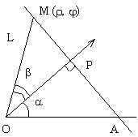
Известны 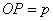, 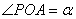, произвольная точка 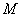 прямой  имеет
координаты 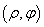.
имеет
координаты 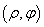.
имеет
координаты 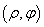.Точка лежит на прямой в том и только в том случае, когда
проекция точки на луч 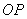 совпадает с точкой  , т.е. когда 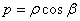,
где 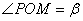.
, т.е. когда 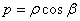,
где 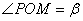.
в том и только в том случае, когда
проекция точки на луч 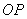 совпадает с точкой , т.е. когда 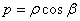,
где 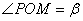.Угол 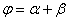 и уравнение прямой принимает вид 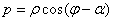.
принимает вид 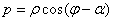.Ответ: